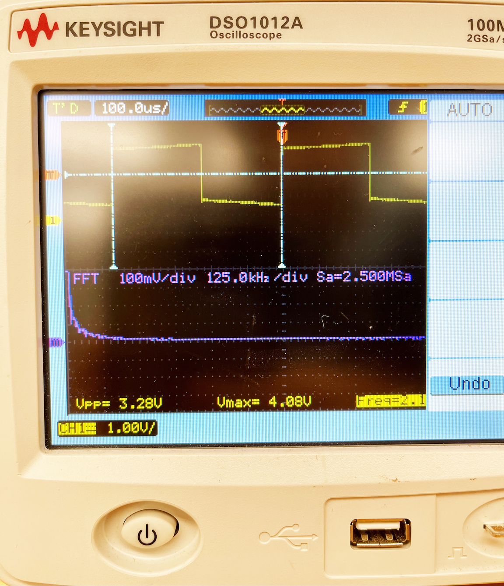

CD40106 Oscillators and Using an Oscilloscope
1K Resistor +
1uF Capacitor
Vpp (Voltage Peak to Peak) = 7.12 - 7.52V
Vmax = 8V
Freq = 1.19kHz
Oscilloscope Basics
What is an Oscilloscope? To visualize an electrical signal. Dynamically graphing voltage over time.
Summing Oscillatos Together
You need an op amp circuit.
In depth explanation of the oscillator: https://2n3904blog.com/cd40106-schmitt-trigger-relaxation-oscillator/
# Hysterisis Voltage A Schmitt trigger will be designed to have positive threshold voltage (Vt+) to be higher than negative threshold voltage (Vt-).
For example, for a 74LS14 Vt+ = 1.6V Vt- = 0.8V
The hysteresis voltage is the difference = 0.8V.